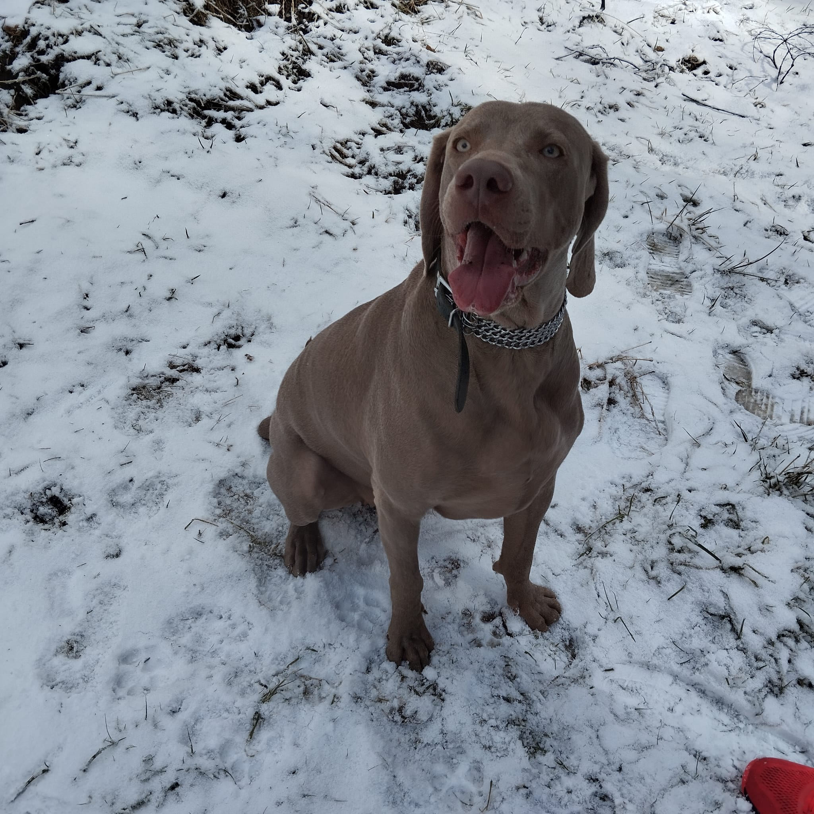
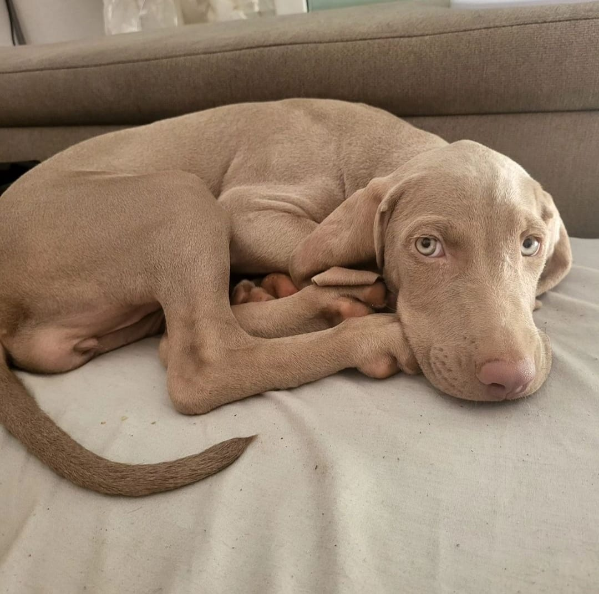

🐾 Qui soc jo?
Hola! Soc l'Aloy, una gossa de raça brac de Weimar. Tinc un pelatge gris molt característic i uns ulls preciosos!
Soc una gossa molt juganera i entremaliada. M'encanta córrer, jugar i passar temps amb la meua família.

🐾 Descobreix el meu món!
Vols conèixer-me una mica millor? Aquí podràs veure les meues fotografies, descobrir com era quan era petita i aprendre curiositats sobre la meua raça.
He viscut moltes aventures a la platja, a la neu i a casa. T'animes a descobrir-les?
Vinga, acompanya'm! 🐶💕
